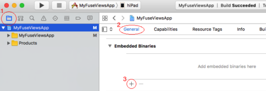
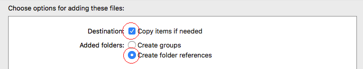
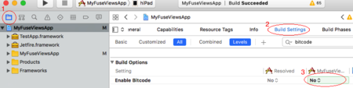

Xcode and Android Studio Integration
The Fuse.Views package allows you to take any UX UI component and export them as a native Library for iOS and Android. In this tutorial we will step by step look at how this is done.
Note: This is a premium feature, included with Fuse's Professional and Custom plans.
Step 0: Installing dependencies
To integrate with Xcode and Android Studio make sure you have a Professional license, and that you have installed the Fuse.Views package using the following command in either terminal (on macOS) or cmd (on Windows):
uno install Fuse.Views
In your .unoproj, add a package reference to Fuse.Views.
It should look something like the following.
{
"Packages": [
"Fuse",
"FuseJS",
"Fuse.Views"
],
"Includes": [
"*"
]
}
Step 1: Exporting Views
In Fuse Views you must explicitly specify which views you want to be able to instantiate from Swift, Objective-C and Java. You can export any UX component, except for non-UI elements (like Triggers and Animations) and UX Classes that have dependencies.
Let's say that, for example, you have defined the following components somewhere in your Fuse project:
<Panel ux:Class="VideoView">
<!-- ... -->
</Panel>
<Panel ux:Class="StatsView">
<!-- ... -->
</Panel>
We can then export these components by providing them as UX Templates to a special ExportedViews tag.
<App>
<ExportedViews>
<VideoView ux:Template="VideoView" />
<StatsView ux:Template="StatsView" />
</ExportedViews>
</App>
Export an Xcode Framework or an Android aar by compiling with -DLIBRARY set.
uno build -t=ios -DLIBRARY
uno build -t=android -DLIBRARY
Now you will find the Xcode framework and the Android aar under the following paths:
- Xcode framework –
build/iOS/Debug/build/Release-iphoneos/ProjectName.framework - Android aar –
build/Android/Debug/app/build/outputs/aar/app-debug.aar
Step 2: Setting up the native Library
Now that we have built our library, we need to add it to our Xcode or Gradle project.
iOS
Add the framework you just built as an embedded binary in Xcode


And finally, disable Bitcode.

Android
In YourAndroidApp/app/build.gradle, just under this line:
apply plugin: 'com.android.application'
Add the following:
allprojects {
repositories {
jcenter()
flatDir {
dirs 'libs'
}
}
}
and in the dependency section, add:
compile(name:'app-debug', ext:'aar')
In AndroidManifest.xml add the following attributes to the main activity declaration:
android:launchMode="singleTask"
android:taskAffinity=""
android:configChanges="orientation|keyboardHidden|screenSize|smallestScreenSize"
And finally, copy build/Android/Debug/app/build/outputs/aar/app-debug.aar to YourAndroidApp/app/libs/app-debug.aar
Updating the framework or aar after fuse rebuild
After a rebuild you need to manually update the framework or aar in your native project. Do this by overwriting the old library with the one you just produced. This is easily automated by scripting the copy-overwrite procedure.
Notes when updating the framework/aar:
- By default Xcode imports frameworks to the project root directory. This is where you want to overwrite.
- If you are using Android Studio you must do a rebuild after updating the aar for code completion and code errors to work properly.
Step 3: Bootstrapping Fuse Views
Before you can instantiate your exported views, fuse needs to be initialized.
Objective-C
Add the following in your AppDelegate
#import <FuseProjectName/Context.h>
- (BOOL)application:(UIApplication *)application willFinishLaunchingWithOptions:(NSDictionary *)launchOptions
{
[uContext initSharedContextWithWindow:^UIWindow* () { return [self window]; }];
[[uContext sharedContext] application:application willFinishLaunchingWithOptions:launchOptions];
return YES;
}
Swift
Add a Swift-Objective-C bridging header and add this import:
#import <FuseProjectName/Context.h>
Then add the following to your AppDelegate.
func application(_ application: UIApplication, willFinishLaunchingWithOptions launchOptions: [UIApplicationLaunchOptionsKey : Any]? = nil) -> Bool {
uContext.initSharedContext(window: { return self.window })
uContext.shared().application(application, willFinishLaunchingWithOptions: launchOptions)
return true
}
Java
In your main Activity, inherit from com.fuse.views.FuseViewsActivity.
public class MainActivity extends com.fuse.views.FuseViewsActivity {
Step 4: Instantiating a View
You are now ready to instantiate your exported views. To interop with your views you will get a handle object with some methods that act as the interface for interop. Through the handle you can get a native View that will display your exported view.
Objective-C
Make sure to have these headers imported:
#import <ProjectName/ExportedViews.h>
#import <ProjectName/ViewHandle.h>
Instantiating the view handle and getting the native view:
ViewHandle* videoView = [ExportedViews instantiate:@"VideoView"];
UIView* nativeView = [videoView view];
Swift
Make sure to have these headers imported in your Swift-Objective-C bridging header:
#import <ProjectName/ExportedViews.h>
#import <ProjectName/ViewHandle.h>
Instantiating the view handle and getting the native view:
let videoView: ViewHandle? = ExportedViews.instantiate("VideoView");
let view: UIView = videoView?.view
Java
Make sure you have these imports in your java file:
import com.fuse.views.ExportedViews;
import com.fuse.views.ViewHandle;
Instantiating the view handle and getting the native view:
ViewHandle videoView = ExportedViews.instantiate("VideoView");
android.view.View nativeView = videoView.getView();
Step 5: Use the fuse view in a native layout
A Fuse View will interop with the native layout, for size it relies on the native layout doing a measure pass on its views. On iOS this might not be the case depending on what kind of layout you have used. So you might have to manage the size by yourself. Using the super view's bounds should be sufficient in most cases.
Objective-C
UIView* parent = ...;
ViewHandle* videoView = [ExportedViews instantiate:@"VideoView"];
UIView* nativeView = [videoView view];
[parent addSubview:nativeView];
// Make the Fuse View fill its parent
[nativeView setFrame:parent.bounds];
Swift
let parent: UIView = ...;
let videoView: ViewHandle? = ExportedViews.instantiate("VideoView");
let view: UIView = videoView?.view
parent.addSubview(view!)
let width = parent.frame.width
let height = parent.frame.height
view?.frame = CGRect(x: 0, y: 0, width: width, height: height)
Java
android.widget.RelativeLayout parent = ...;
ViewHandle videoView = ExportedViews.instantiate("VideoView");
android.view.View nativeView = videoView.getView();
nativeView.setLayoutParam(new android.widget.RelativeLayout.LayoutParams(MATCH_PARENT, MATCH_PARENT));
parent.addView(nativeView);
Step 6: Interop between native and fuse
As mentioned the ViewHandle object acts as your interface with fuse. You can set a data context for your view in the form of JSON, a key-value pair and add callbacks.
Lets take a look at the API:
Objective-C
@interface ViewHandle : NSObject
@property (readonly) UIView* view;
-(void) setDataJson:(NSString*)json;
-(void) setDataString:(NSString*)value forKey:(NSString*)key;
-(void) setCallback:(Callback)callback forKey:(NSString*)key;
@end
The signature of Callback is as follows:
typedef void(^Callback)(Arguments*);
Java
public class ViewHandle {
public android.view.View getView();
public void setDataJson(String json);
public void setDataString(String key, String value);
public void setCallback(String key, com.fuse.views.ICallback callback);
}
The interface of ICallback is as follows:
public interface ICallback {
void invoke(IArguments args);
}
If you are familiar with JavaScript and DataBinding in fuse this will be quite easy to understand. setDataJson is the equivalent of having a module.exports in JavaScript and setCallback is the equivalent of adding a function to the exports. The function arguments passed to the native callback in Fuse views will contain the same data you would get in JavaScript, but you get the through the methods available on the Arguments. Since the function arguments needs to be serialized to strings and JSON, accessing the Arguments will lazily serialize what you request. In the common case you are more interested in getting the callback than accessing the whole data context. Please have a look at Binding functions for an overview of what arguments will be passed.
@interface Arguments : NSObject
@property (readonly) NSDictionary<NSString*,NSString*>* args;
@property (readonly) NSString* dataJson;
@end
public interface IArguments {
HashMap<String,String> getArgs();
String getDataJson();
}
Let's look at an example with UX and see how that component can be populated with data from JavaScript and from a native language with fuse views:
<DockPanel>
<Text Value="{title}" Dock="Top" Margin="8" TextAlignment="Center" />
<StackPanel ux:Class="UsersListView" Dock="Fill">
<Each Items="{users}">
<Panel Clicked="{user_clicked}">
...
</Panel>
</Each>
</StackPanel>
</DockPanel>
For the above UX code we can populate it with JavaScript:
module.exports = {
title: "Meetup attendees",
users: [...],
user_clicked: function(args) { ... }
}
The equivalent in fuse views will look like this:
Objective-C
ViewHandle* usersListView = [ExportedViews instantiate:@"UsersListView"];
[usersListView setDataString:@"Meetup attendees" forKey:@"title"];
[usersListView setDataJson:@"{ \"users\" : [...] }"];
[usersListView setCallback:^void(NSDictionary<NSString*,NSString*>* args) { ... } forKey:@"user_clicked"];
Swift
let usersListView: ViewHandle? = ExportedViews.instantiate("UsersListView")
usersListView?.setDataString("Meetup attendees" as String!, "title" as String!)
usersListView?.setDataJson("{ \"users\" : [...] }" as String!)
usersListView?.setCallback({ (args) -> Void in { ... } }, forKey: "user_clicked")
Java
ViewHandle usersListView = ExportedViews.instantiate("UsersListView");
usersListView.setDataString("title", "Meetup attendees");
usersListView.setDataJson("{ \"users\" : [...] }");
usersListView.setCallback("user_clicked", new ICallback() {
@Override
public void invoke(HashMap<String, String> args) { ... }
});